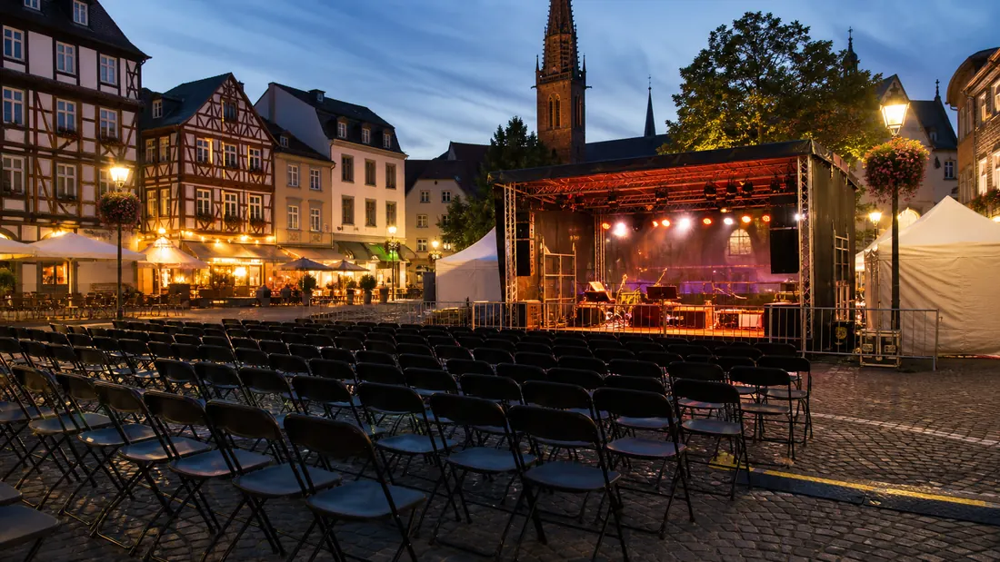

Tagesarchiv
53 regionale Meldungen
Alle Karten öffnen die jeweilige Originalmeldung.

Hessen Aktuell
Regionale Meldungen dieses Tages, gesammelt aus den aktiven Quellen und nach Stadt sowie Thema lesbar.
Tagesarchiv
Alle Karten öffnen die jeweilige Originalmeldung.
Meldungen

Kassel · Politik
Die Stadt Kassel bereitet die Anpassung der Abfallwirtschafts- und -gebührensatzung vor. Erstmals seit 14 Jahren werden die Abfallgebühren angehoben. Grund dafür sind deutlich gestiegene Kosten bei Sammlung, Transport und Entsorgung von Abfällen. Nach dem Gremienlauf soll sie zum 1. Januar 2027 in Kraft treten.

Kassel · Verkehr
In der kommenden Woche kommt es im Stadtgebiet aufgrund einiger Baumaßnahmen zu Verkehrsbehinderungen. Die Straßenverkehrsbehörde bittet alle Verkehrsteilnehmenden, die Baustellen bei der Planung ihrer Fahrten zu berücksichtigen.

Kassel · Veranstaltungen
Die Stadt Kassel hat erstmals den neuen Kulturehrenpreis „Das K“ verliehen. Die Auszeichnung ging an Markus Knierim, Gründer und Betreiber des Theaterstübchens in Kassel.

Kassel · Politik
Aktionstag in den Kreiskliniken setzt Händedesinfektion in den Fokus Weitere Details, Hintergründe und vollständige Angaben stehen in der verlinkten Originalmeldung.

Kassel · Politik

Kassel · Politik
Kassel · Politik
Kassel · Politik

Kassel · Polizei
Am 16.09.2026 gab es die nordhessische Premiere zum Format „Musik trifft Prävention“ in Bad Arolsen. Knapp 300 Bürgerinnen und Bürger waren der Einladung der Stadt Bad Arolsen gefolgt.

Kassel · Polizei
Großer Andrang, viele tolle Gespräche und starkes Interesse an den verschiedenen Berufen der Einsatzkräfte: Darauf kann die Blaulichtfamilie nach der Veranstaltung in Kassel zurückblicken.

Kassel · Polizei
Die Kasseler Polizei und die Staatsanwaltschaft Kassel ermitteln aktuell in drei mutmaßlichen Erpressungsfällen, bei denen eine Tätergruppe von verschiedenen Geschäftsinhabern Geldsummen forderten.

Kassel · Polizei
Im Rahmen der Aktion "Blitz for Kids" hat die nordhessische Polizei zusammen mit Schülerinnen und Schülern Geschwindigkeitskontrollen im Umfeld von Schulen und Kitas durchgeführt.
Kassel · Polizei
Unter dem Motto "Blitz für Kids" führte der Verkehrsdienst aus Korbach zusammen mit 10 Schülerinnen und Schülern aus Bad Wildungen am vergangenen Donnerstagvormittag Geschwindigkeitskontrollen durch.

Frankfurt · Veranstaltungen
Frankfurt (ots) - (rü) Am vergangenen Samstag (26. September 2026) kam es während einer Sportgroßveranstaltung im Deutsche Bank Park zur Verwendung eines Kennzeichens einer verfassungswidrigen Organisation. Eine bislang unbekannte Frau zeigte im ...
Frankfurt · Polizei
Frankfurt (ots) - (bo) Am Samstagmorgen (26. September 2026) leistete eine 19-Jährige Widerstand und versuchte, Polizeibeamte anzugreifen. Die 19-jährige Tatverdächtige befand sich zur Durchsetzung eines Platzverweises im Zentralen ...
Frankfurt · Polizei
Frankfurt (ots) - (bo) Gestern Morgen (27. September 2026) sollen Unbekannte einen Fahrer eines Fahrdienstleisters angegriffen und verletzt haben. Nach aktuellen Erkenntnissen habe der 40-jährige Fahrer eines Fahrdienstleisters drei unbekannte ...
Frankfurt · Polizei
Frankfurt (ots) - (ma) Am Sonntagmorgen (27. September 2026) wurde ein 24-Jähriger im Bereich Bahnhof Rödelheim verletzt aufgefunden. Die Polizei sucht Zeugen Nach aktuellen Erkenntnissen hielt sich der 24-Jährige in der Zeit zwischen 05:00 und ...
Frankfurt · Polizei
Frankfurt (ots) - (ma) Wie den Medien bereits bekannt (https://www.presseportal.de/blaulicht/pm/4970/6328588), kam es in der Nacht von Dienstag (4. August 2026) auf Mittwoch (5. August 2026) zu einem schweren Raub in einer Wohnung. Der Polizei ...

Frankfurt · Verkehr
U-Bahnen halten im Oktober nicht an der Station. Weitere Details, Hintergründe und vollständige Angaben stehen in der verlinkten Originalmeldung.

Frankfurt · Verkehr
Familienfest, historische Bahnen und eine Live-Schaltung zur Tram-EM: Mit mehreren tausend Gästen feierte die VGF am Samstag ihr 30-jähriges Bestehen.

Frankfurt · Verkehr
Die U-Bahn-Linie entfällt für Bauarbeiten am kommenden Wochenende ab der Haltestelle Eissporthalle. Weitere Details, Hintergründe und vollständige Angaben stehen in der verlinkten Originalmeldung.
Frankfurt · Verkehr
Ersatzverkehr für Straßenbahn // S1 und S2 werden umgeleitet Weitere Details, Hintergründe und vollständige Angaben stehen in der verlinkten Originalmeldung.
Frankfurt · Verkehr
Die VGF lädt am 19. September 2026 von 11 bis 21 Uhr zum großen Familienfest auf den Betriebshof Eckenheim ein. Weitere Details, Hintergründe und vollständige Angaben stehen in der verlinkten Originalmeldung.

Frankfurt · Wirtschaft
Aktuelle Meldungen zu Wirtschaft in Frankfurt. Details stehen auf der Originalseite. Weitere Details, Hintergründe und vollständige Angaben stehen in der verlinkten Originalmeldung.

Wiesbaden · Sicherheit
Nachdem am Freitag, 25. September, in der näheren Umgebung des Wiesbadener Kurhauses eine bakterielle Belastung des Trinkwassers mit Pseudomonas aeruginosa festgestellt worden war, haben die Wasserversorgungsbetriebe der Landeshauptstadt Wiesbaden umfangreiche weitere Untersuchungen veranlasst.
Wiesbaden · Politik
Eine Geschäftsidee frühzeitig mit anderen zu teilen, neue Perspektiven einzubeziehen und von externer Expertise zu profitieren, kann wichtige Impulse für die Gründung geben. Genau hier setzt der Wiesbadener Hackathon an: Gründerinnen und Gründer sowie Teams mit sozialen und/oder ökologischen Geschäftsideen erhalten.

Wiesbaden · Veranstaltungen
Die Artothek, Schulberg 10, macht von Freitag, 2. Oktober, bis Montag, 19. Oktober, Herbstferien. Ab Dienstag, 20. Oktober, ist die Artothek wieder geöffnet.
Wiesbaden · Politik
Die Steuererklärung anfangen, Fotos sortieren oder endlich das übervolle E-Mail-Postfach durchgehen: Manche Aufgaben bleiben länger liegen, als einem lieb ist. Das Zukunftswerk Wiesbaden lädt deshalb zur ersten Adminparty ein. Die Teilnehmenden bringen ihre eigenen Aufgaben mit und nehmen sich gemeinsam Zeit, sie.
Wiesbaden · Verkehr
Wie könnte ein vertrauter Ort in Wiesbaden aussehen, wenn mehr Grün, öffentlicher Nahverkehr oder Barrierefreiheit im Mittelpunkt stehen? Das neue KI-Tool „Stadtvisionen Wiesbaden“ lädt Besucherinnen und Besucher des Zukunftswerks dazu ein, solche Zukunftsbilder selbst auszuprobieren.
Wiesbaden · Polizei
Wiesbaden (ots) - 1. 44-Jähriger nach Auseinandersetzung beraubt, Wiesbaden-Südost, Konrad-Adenauer-Ring, Sonntag, 27.09.2026, 03:00 Uhr bis 04:00 Uhr (kq)In der Nacht zum Sonntag wurde ein 44-jähriger Mann im Konrad-Adenauer-Ring von zwei ...
Wiesbaden · Polizei
Wiesbaden (ots) - (jul) Die Öffentlichkeitsfahndung nach der 75-jährigen Frau aus Wiesbaden von Samstag, 26.09.2026 um 07:11 Uhr wird hiermit zurückgenommen. Die vermisste Frau konnte wohlbehalten angetroffen werden. Es wird gebeten, das zur ...
Wiesbaden · Verkehr
Wiesbaden (ots) - 1. Trickdiebe erfolgreich, Wiesbaden, Höhenstraße, Donnerstag, 24.09.2026, 16:30 Uhr (zi) Am Donnerstagnachmittag erbeuteten zwei Täter Bargeld und Schmuck, nachdem sie sich zuvor als Telekom-Mitarbeiter ausgegeben und so ...
Wiesbaden · Verkehr
Wiesbaden (ots) - Wiesbaden, Aarstraße (B54) zwischen Wiesbaden und Taunusstein, Freitag, 25.09.2026, 20:25 Uhr (zi) Am Freitagabend kam es auf der B54 zwischen Wiesbaden und Taunusstein zu einem schweren Verkehrsunfall zwischen einem Motorrad und ...
Wiesbaden · Polizei
Wiesbaden (ots) - Verdächtige Gegenstände an zwei Strommasten sorgen für Polizeieinsatz - Entwarnung am Abend, Wiesbaden-Delkenheim, Feldgemarkung, Bereich Sohlkautweg, Freitag, 25.09.2026, 16:30 Uhr bis 20:15 Uhr (kq)Ungewöhnliche Gegenstände ...
Darmstadt · Politik
Magistrat hat der Änderung angesichts von geänderten Rahmenbedingungen und Verhaltensweisen der Besucherinnen und Besucher zugestimmt.

Darmstadt · Veranstaltungen
Diese Satzung schützt Wohnraum vor unzulässiger Feriennutzung und gewerblicher Fremdenbeherbergung. Weitere Details, Hintergründe und vollständige Angaben stehen in der verlinkten Originalmeldung.
Darmstadt · Veranstaltungen
Die Teilnahme an den Veranstaltungen ist kostenlos, eine Anmeldung ist nicht erforderlich. Weitere Details, Hintergründe und vollständige Angaben stehen in der verlinkten Originalmeldung.
Darmstadt · Politik
Ziel ist es, den Standort langfristig für Gemeinwesenarbeit und soziale Angebote zu sichern. Weitere Details, Hintergründe und vollständige Angaben stehen in der verlinkten Originalmeldung.
Darmstadt · Polizei
Darmstadt (ots) - Mehrere Gartenhütten in einer Kleingartenanlage im Bereich des Seiterswegs gerieten in der Nacht zum Sonntag (27.9.) in das Visier Krimineller. Die Unbekannten brachen zunächst Fenster auf, um in die Gartenhütten zu gelangen. Im ...
Darmstadt · Polizei
Darmstadt (ots) - Nachdem sich am Freitagmittag (25.9.) gegen 13 Uhr ein Raub in der Brüder-Grimm-Straße zugetragen hat, ermittelt nun die Kriminalpolizei. Nach derzeitigen Erkenntnissen entwendeten zwei bislang noch unbekannte Täter unter ...
Darmstadt · Polizei
Darmstadt (ots) - Ein in einem Parkhaus am Karolinenplatz abgestellter Mercedes geriet in der Nacht zum Sonntag (27.9.) in das Visier von Kriminellen. Die Täter verschafften sich gewaltsam über ein Fenster Zugang in den Innenraum. Anschließend ...
Darmstadt · Polizei
Darmstadt (ots) - Einbrecher haben am Freitag (25.9.) ein Wohnhaus im Pulverhäuserweg ins Visier genommen. Ersten Ermittlungen zufolge verschafften sich die noch unbekannten Täter zwischen 13 und 14 Uhr gewaltsam über ein Fenster Zutritt in die ...
Darmstadt · Verkehr
Darmstadt (ots) - Am späten Sonntagabend (27.) kam es gegen 23:20 Uhr zu einer Meldung, wonach sich ein PKW im Bereich der Straßenbahnhaltestelle "Borsdorffstraße" in Darmstadt-Kranichstein im Gleisbett festgefahren habe. Durch die entsandten ...
Hessen · Verkehr
Der Bundesrat hat heute den Weg für den neuen Tankrabatt freigemacht. Ab 1. Oktober werden Benzin und Diesel um rund 17 Cent pro Liter entlastet.
Hessen · Verkehr
Hessen macht sich im Bundesrat für bessere Bedingungen für die Biotechnologie in Deutschland stark. Weitere Details, Hintergründe und vollständige Angaben stehen in der verlinkten Originalmeldung.
Hessen · Verkehr
Hessen will den Mieterschutz ausweiten: Künftig sollen in 71 statt bisher 49 Kommunen besondere Schutzregeln für Mieterinnen und Mieter gelten.
Hessen · Verkehr
Heute wurde zum fünften Mal der Hessische Preis für Innovation und Gemeinsinn im Wohnungsbau verliehen, insgesamt sechs Projekte wurden in Frankfurt-Höchst ausgezeichnet
Hessen · Veranstaltungen
Bei der Jahresveranstaltung „Serielles Sanieren 2026“ wird sich mit der Frage beschäftigt, wie sich Bestandsgebäude schneller und wirtschaftlicher energetisch modernisieren lassen.
Hessen · Politik
Auf dem One Campus Schwalbach ist das erste erneuerte Gebäude eröffnet worden. Procter & Gamble investiert bis 2032 rund 400 Millionen Euro in den Standort.
Hessen · Politik
Finanzminister Lorz hat die Planungsdaten für 2027 frühzeitig veröffentlicht. Der kommunale Finanzausgleich erreicht mit 7,532 Milliarden Euro einen neuen Höchststand.
Hessen · Polizei
Ein überarbeiteter Leitfaden und ein neuer Polizeierlass haben Kommunen und Veranstaltern Orientierung für die Planung sicherer Feste gegeben. Dabei gilt der Grundsatz der Verhältnismäßigkeit.
Hessen · Politik
Weinmajestäten, Märchenfiguren, Blütenköniginnen – Ministerpräsident Rhein und seine Frau Tanja Raab-Rhein empfangen Hessische Hoheiten im Schloss Biebrich.
Hessen · Politik
Wissenschaftsminister Gremmels hat im Bundesrat für ein vollständig digitales BAföG geworben. Antragstellung und Übermittlung aller Unterlagen sollen digital möglich sein.